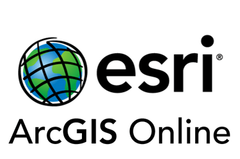

Deep River Trail
Our Team
Sharad Mainaly
Cartographic Specialist
Web developer & Application Developer
Ramon Boyce
Cartographic Specialist
Researcher & Solution Developer
Application Specialist
Mapbox & Leaflet Specialist
The Problem
Town of Deep River requires a web application but has a very limited budget. Our team will be exploring various platforms that can build a high quality, low-cost application that will be ideal to build this product on. The application must fit our skillset, be of low budget, non-time consuming and produce a product with all the functionality required which are pop up tables, good basemaps, filtered searches and more.

Here is the the Problem Statement:
- Ideal: Finding a low cost, user-friendly platform to develop a mobile application for Town of Deep River.
- Reality : Reality: Town of Deep River has a very limited budget to own a premium web application.
- Consequences:If no solution is found, the locals and visitors would have no access to a trail web/mobile app.
- Proposal: The project will focus on exploring various low-cost platforms to efficiently display all the trails.
Scope
Along with research, Our team will be creating a mini demo on identified platforms. In these demos we will be testing for the criteria listed above and analyzing which software achieves the solution to the problem best. Advantages and Disadvantages will be documented as well with any challenges encountered. Keep scrolling to find out how we worked towards completing this!
Our Journey
We are team of three dynamic people with different interest and skills: two Cartographic Specialist and one Application specialist. We started sharing our areas of strength focusing on the scope of our project. Regular meeting times were fixed and preferred method of contacts shared.
In the beginning, all was going well, communication methods was set workflows were in order and we were on track. Unexpected closure of school really caused a massive problem with our team. The communication which was once constant, was now much harder with other life complications such as family and hectic complicatons. On the verge of trouble, where we were overcoming these hurdles, we lost a team member which made it even harder to push forward. Nevertheless the team pushed forward. We first began by doing research on what are the platforms that have the capabilities to produce the application needed and we decided upon four(4) software. Google My Maps, Mapbox, ArcGIS Online and Leaflet. Afterwards we decided to use generalization techniques to simplify and smooth the trails for a better cartographic representation. The data was then converted into KML and GeoJSON file formats which can be used in the platforms above. Our first challenge came in Google MyMaps, where data of 5MB are more could not be imported. We got around this problem by splitting lines to make them into smaller packages so the data could be imported. Immediately after seeing this problem, the team Google My Maps was not going to be the winnning platform. Our team started developing in Leaflet but with limited experience we found it very difficult operating this software and creating an application of high standard. Mapbox initially impressed us, with its beautiful basemaps and ability to create custom styles. Our team believes a very beautiful map can be made with this software, however, as the code started to become more complex. we slowly started to realize Mapbox might not be the way forward. with the time allocated to create this web application. Finally our team explored ArcGIS Online, and we absolutely loved it. With the ability to configure pop up tables, quick development of application and high quality basemaps we determined the this software was the winning application to build the application for the Town of Deep River.
Shortlisting the Software to explore
After research, Our team came to the conclusion, that we will be testing for the criteria listed above in four(4) software and analyzing which best achieves the solution. The four software :
- Mapbox
- Google MyMaps
- Leaflet
- ArcGIS Online
Mapbox
Mapbox is a great platform for beautiful maps.. It is a mapping startup that offers users a platform for making custom maps based on OpenStreetMap and other open data.
While we were having some issues with implementing programming skills, we started exploring options to overcome our challenges and found mapbox studio is one good fit for us which does not require any coding. We published our trail layers to ArcGIS Online, exported them as a GeoJSON file and downloaded the GeoJSON file. Mapbox has simple solution to display layers without any coding. Mapbox has an option to add layers as Tilesets and create styles form it. A tileset is a collection of raster or vector data broken up into a uniform grid of square tiles at 22 preset zoom levels, which is necessary to make map visible on mobile devices or in the browser.
Supported format:
- Raster tilesets: tiff or Geotiff files
- Vector tilesets: GeoJSON, Shapefile, KML, or GPX files
Road Blocks : We have not heard back from our clients on questions we have on trails. There are so many Jumbled trails which need to be splitted and make them look more visually appealing. We decided to try using different trails in different platforms just to see how they looks on web
Alternative option
We realized the quality of map was not looking great. We decided to work around and code GeoJSON file, and reproduce another application.Criteria
As we ventured into Mapbox, we firstly tried to indivually test each criteria to see how effective it is at each task to weigh them against each other. Firstly,
Pop-up Table
Mapbox provides an easy interactive on-click pop-up table that's easily configurable and portrays alot of information to users efficiently and effectively.
Cost
Mapbox is free as long as the application provides free service up to 50,000 views per month. This works well for Town of Deep River
Time
Mapbox was very time consuming compared to the other applications. The margin of error is very high and our skillset was not up to standard to have a high quality application running in a couple weeeks.
Quality
The maps produced by mapbox are of the highest quality. The basemaps and ability to create styles are unmatched. Cartogram is also a very nice feature for creating styles of the fly.
Mapbox was given a 3/5 for efficiently dispaying the trails. Although Mapbox is a fantastic application and very high quality, it is believed our skillset will not produce as good of a product in the time frame set. Next, we dived into ArcGIS Online. It is a collaborative web GIS that allows you to use, create, and share maps, scenes, apps, layers, analytics, and data. For ArcGIS Online, we also started with indivually testing each criteria to see how effective it is at each task to weigh them against each other. ArcGIS Online also provides an easy interactive on-click pop-up table that's easily configurable and portrays alot of information to users efficiently and effectively. In addition it also allows the user to zoom into that feature which can be very useful for the application ArcGIS Online comes at a cost. Town of Deep River would not need a premium account for this so an estimated cost for a organization creator user account would be around 820/yr which is not too bad. The time was moderate for ArcGIS Online. A good application can be built really quickly and can be designed very well. We are more experienced with this item so goals can be met using this software much more effectively. The maps produced by ArcGIS are of good quality. The basemaps are of a nice quality and there are plenty options which can be added to the a map that is suitable for the web application.
ArcGIS Online was given a 4/5 star rating. We found this software to be very efficient and the best for displaying the trails. Symbology and line patterns can be done quickly done and the application layout is very nice with ArcGIS Online Web Builder The interactive map below was obtained through Leaflet. We used ArcGIS Pro to load the gathered shapefiles and then convert them to GeoJSON files. These GeoJSON files were then used as input for building our LeafLet Map. While performing the Leaflet Demo using the complete dataset available, we were able to test its suitability to be our platfom of choice. On-click pop-up Tables are quite easy to configure on Leaflet using the onEachFeature option which is an a function that gets called on each feature before adding it to each GeoJSON layer. Leaflet is a free, open source application Leaflet was very time consuming when configuring on-click popups tables, applying styling, or adding a legend for one large GeoJson file containing a large number of collection features as coding needed be repeated for all identified features which is error prone. The obtained Leaflet map allows users to zoom and pan around, to interact with individual layers in order to access all relevant.It does also offer many styling and basemap options that may be extended with appropriate plug-ins. Click here to open on New Window Our team personally did not find Leaflet effective for us. With two(2) Cartographic Specialist in our team with limited experience with Leaflet, it is not a good fit for us considering the time frame we have. It is very capable and can produce high quality maps but simply not for us. Google My Maps is very easy platform for developers to add points or to draw shapes. Google My Maps is the fastest platform to develop application for our projet. We consider looking at different aspect to consider it as our final solution My Maps also provides an easy interactive on-click pop-up table that's easily configurable and portrays alot of information to users efficiently and effectively. To configure and edit pop-up table was easiest among all the softwares we explored. My Maps is completely free platform, it allows developers to share on webpage wihtout any restrictions. The time for app development in google was very quick and no programming knowledge required. Maps made on My Maps are good but not that great compared to other software however basemaps are as good as other high cost platform suitable for our project.
We learned google has limtation on file size
Symbols were very easy to add
Easy to configure symbols Google received 2/5 rating for efficiently displaying the trails. Although pop-up tables and symbology can be done very quickly, the very limited ability to import features only less than 5MB, combined with low quality makes us believe it wont be the best for our goal After testing each software, the team came to a decision that ArcGIS Online was the best fit for this project. Overall, this software
proved to be the most balanced, having good interactivity, can be made relatively quickly, fits the team's skillset and although being the only software having a price, the product produced is definitely worth it. Click image below to view Our Goal was to find the application that best suits this project. With the knowledge acquired the team can now move forward and build a final product for the Town of Deep River. Findings
Mapbox
Pros
Cons
Overall Rating
ArcGIS Online
Criteria
Pop-up Table

Cost
Time
Quality
Findings
Pros
Cons
Overall Rating
Leaflet
Leaflet
Criteria
Pop-up Table

Cost
Time
Quality
Challenges
Pros
Cons

Overall Rating
Google My Maps
Supported File
Criteria
Pop-up Table
Cost
Time
Quality

Interactive Demo
Here is a demo on google My Map.
Findings
Pros
Cons
Overall Rating
Our Solution